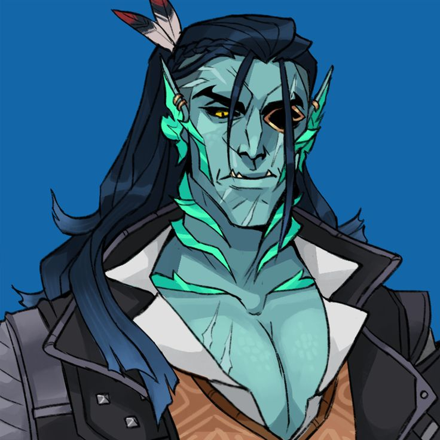
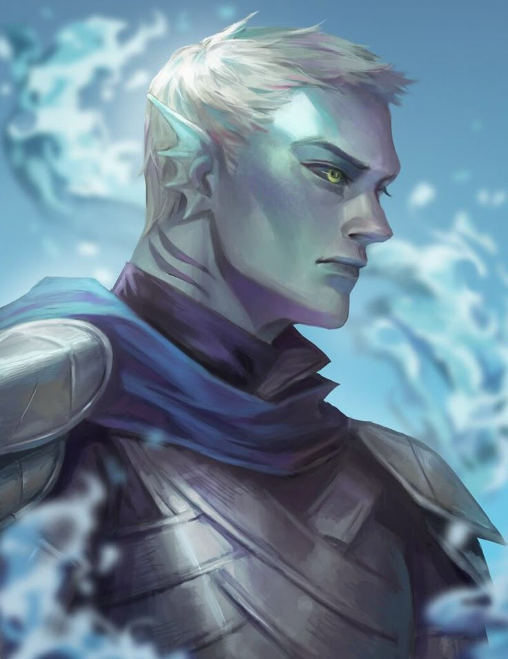
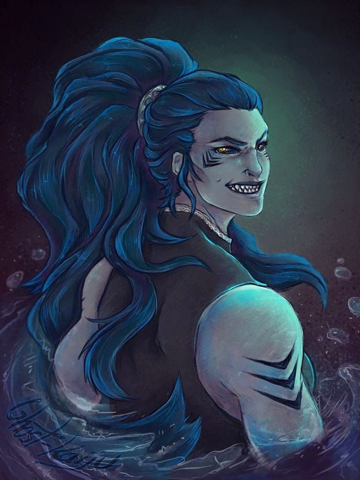

A Família Willoen governa Urudelos, formada por um trisal de tritões que dividem entre si os títulos de Duque, Marquês e Conde da região. Juntos, sustentam a segurança, o comércio e a relação de Urudelos com a coroa do Reino Polaris.
✦ TRISAL DE URUDELOS

✦ família willoen
Orllagh Willoen
O mais experiente do trisal, Orllagh Willoen atua como respondente direto às rainhas do Reino Polaris há gerações, servindo desde o reinado da Rainha Melia até o da atual Rainha Margarida. Sua longevidade e sabedoria fazem dele a voz de Urudelos perante o trono.

✦ família willoen
Nickias Willoen
Responsável pela segurança e pelas defesas de Urudelos, Nickias Willoen mantém a região protegida com o mesmo rigor com que enfrenta as águas mais traiçoeiras. Ao lado de Orllagh e Martinel, forma o trisal que governa a região.

✦ família willoen
Martinel Willoen
Martinel Willoen comanda a rede de pesca, o comércio e a fiscalização de Urudelos, garantindo que os recursos da região sustentem tanto seu povo quanto o Reino Polaris.